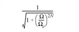
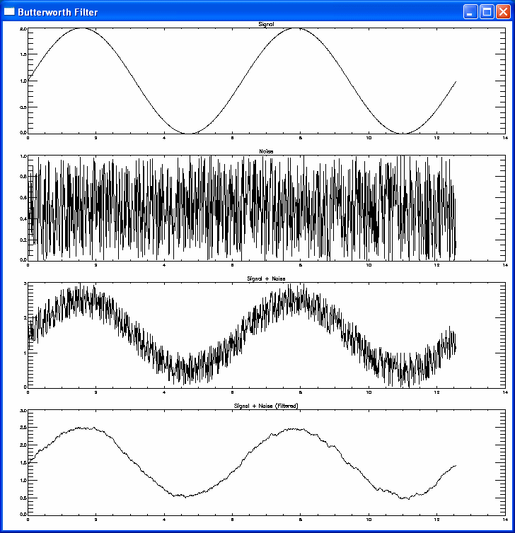

The BUTTERWORTH function returns an array that contains the absolute value of the low-pass Butterworth kernel. In practice, it is useful for filtering out high-frequency noise.
This routine is written in the IDL language. Its source code can be found in the file butterworth.pro in the lib subdirectory of the IDL distribution.
The form of the filter is given by the following equation:

where Ω is the frequency, Ω c is the cutoff frequency, and N is the order.
Result = BUTTERWORTH( X [, Y [, Z ]] [, CUTOFF = value ] [, ORDER = value ] [, / ORIGIN ] [, XDIM = value ] [, YDIM = value ] [, ZDIM = value ] )
The result is either a 1D, 2D, or 3D array with the dimensions of the result defined by the inputs X , Y , and Z .
Either a scalar value containing the number of elements in the x direction or a vector of up to three elements giving the number of elements in the x , y , and z directions, respectively.
The number of elements in the y direction. This argument is ignored if X contains more than one element.
The number of elements in the z direction. This argument is ignored if X contains more than one element.
The cutoff frequency. The default value is 9.
The order of the filter. The default value is 1.
If set, the return array is centered at the corners of the array.
The x spacing of the columns.
The y spacing of the rows.
The z spacing of the planes.
In the following example, we add high-frequency noise to a sine wave, and then filter out the noise with a Butterworth filter.
Create a filter and apply it to the signal:
; Create a sine wave
x = 4*!PI/1000 * FINDGEN(1000)
y_signal = (SIN(x)+1)
; Create random noise
y_noise = RANDOMU(SEED,1000)
; Add the noise to the sine data
y_summation = y_signal + y_noise
; Create a Butterworth filter
filter = BUTTERWORTH(1000, 2)
; Do a forward Fourier transform of the image, and then do
; an inverse Fourier transform of the filtered image
y_filtered = FFT( FFT(y_summation, -1) * filter, 1 )
Plot the results:
; Draw all plots to the same window
!p.MULTI = [0,0,4,0,0]
; Resize the window
WINDOW, /FREE, XSIZE=(720), YSIZE=(720), $
TITLE='Butterworth Filter'
; Use a maximum of 256 colors and load a grayscale color map
DEVICE, RETAIN=2, DECOMPOSED=0
LOADCT, 0
; Set eye-pleasing drawing and background colors
!p.color = 0
!p.background = 255
PLOT, x, y_signal, TITLE='Signal'
PLOT, x, y_noise, TITLE='Noise'
PLOT, x, y_signal + y_noise, TITLE='Signal + Noise'
PLOT, x, y_filtered, TITLE='Signal + Noise (Filtered)'
; Reset the system variable to one plot per page
!p.MULTI=0
; Reset the drawing and background colors
!p.color = 255
!p.background = 0
The example creates the following output:

Butterworth Filter Example
|
6.3 |
Introduced |